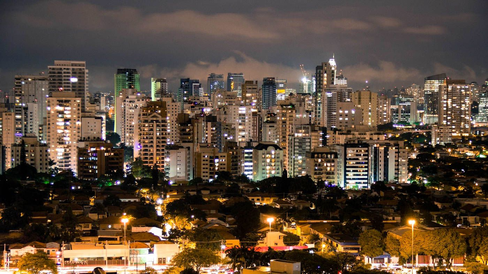

 Um dos principais centros financeiros da cidade, a avenidade
paulista também possui diversas opções de entretenimento.
Endereço do Museu de Arte de São Paulo, MASP, do Teatro
Gazeta e muitos outros, a região é de fácil acesso graças as
diversas linhas de ônibus que cruzam a avenida e a linha de
metrô que passa por baixo dela.
A Avenida Paulista sempre é assunto. o que será que estão
falando a respeito no
Twitter?.
Depois de um dia de trabalho, nada melhor do que um
bom chopp, um petisco e uma conversa em uma mesa de
bar.Opções de sobra na região das ruas Aspicuelta,
Fradique Coutinh e Wisar. Fora é claro vários outros
restaurantes famosos e de grande respeito quando falamos
de um Master Chef da vida.
Os Bares de São Paulo sempre é o assunto. O que será que estão
falando a respeito no
Twitter?.
E existem muitos outros lugares
interessantes na cidade...